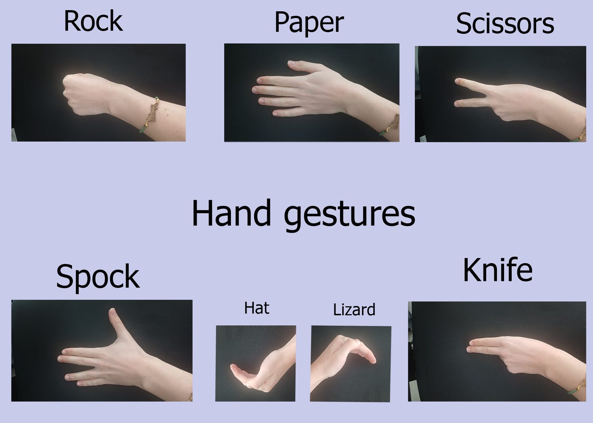

Gesture-controlled game
Can you control a game with your hands, using nothing but a webcam? I built a training tool for a k-Nearest Neighbors model on MediaPipe hand landmarks, then used the trained model to play "Rock Paper Scissors Spock Lizard Hat Knife" entirely through the webcam.
- My role
- Solo: design & development
- Tech
- MediaPipe HandLandmarker · k-NN · JavaScript
- Parts
- Training tool + game
- Data
- Own dataset, exported as JSON

The training tool
With this tool you create your own dataset of hand gestures and train a k-NN model. MediaPipe HandLandmarker detects the hand through the webcam, buttons let you make a gesture (like Rock or Paper) and label it directly, and the normalized landmark coordinates become training data.
- Real-time hand tracking with MediaPipe.
- Collecting and labelling landmark data.
- Implementing and training k-NN in JavaScript.
- Train/test split to measure accuracy.
- Exporting the dataset to
posedata.json.
The RPSLSHK game
The game loads posedata.json, initializes the k-NN model and classifies your hand gesture in real time. Once you confirm your move, the computer picks a random gesture and the game shows who won according to the rules.
- Loading and parsing the trained dataset.
- Real-time classification of the player's gesture.
- Game rules, random computer moves and result display.
What I learned
I went through the whole pipeline from data collection to a working machine-learning web app: integrating MediaPipe for real-time computer vision, using k-NN in practice, and structuring training data with JSON export and import. Above all it showed me how much the quality and quantity of training data decide how well a model performs.
Gebaren-gestuurd spel
Kun je een game besturen met alleen je handen en een webcam? Ik bouwde een trainingstool voor een k-Nearest Neighbors-model op MediaPipe hand-landmarks, en gebruikte het getrainde model om "Rock Paper Scissors Spock Lizard Hat Knife" volledig via de webcam te spelen.
- Mijn rol
- Solo: ontwerp & development
- Techniek
- MediaPipe HandLandmarker · k-NN · JavaScript
- Onderdelen
- Trainingstool + game
- Data
- Eigen dataset, geëxporteerd als JSON
De trainingstool
Met deze tool maak je je eigen dataset van handgebaren en train je een k-NN-model. MediaPipe HandLandmarker herkent de hand via de webcam, met knoppen maak je een gebaar (zoals Rock of Paper) en label je het direct, en de genormaliseerde landmark-coördinaten worden trainingsdata.
- Real-time hand tracking met MediaPipe.
- Landmark-data verzamelen en labelen.
- k-NN implementeren en trainen in JavaScript.
- Train/test-verdeling om de nauwkeurigheid te meten.
- De dataset exporteren naar
posedata.json.
Het RPSLSHK-spel
Het spel laadt posedata.json, initialiseert het k-NN-model en herkent je handgebaar in real time. Zodra je je zet bevestigt, kiest de computer een willekeurig gebaar en toont het spel wie er volgens de regels gewonnen heeft.
- De getrainde dataset laden en parsen.
- Real-time classificatie van het gebaar van de speler.
- Spelregels, willekeurige computerzetten en de uitslag tonen.
Wat ik leerde
Ik doorliep de hele keten van dataverzameling tot een werkende machine learning-webapp: MediaPipe integreren voor real-time computer vision, k-NN in de praktijk gebruiken, en trainingsdata structureren met JSON-export en -import. Het liet me vooral zien hoe sterk de kwaliteit en hoeveelheid trainingsdata bepalen hoe goed een model presteert.